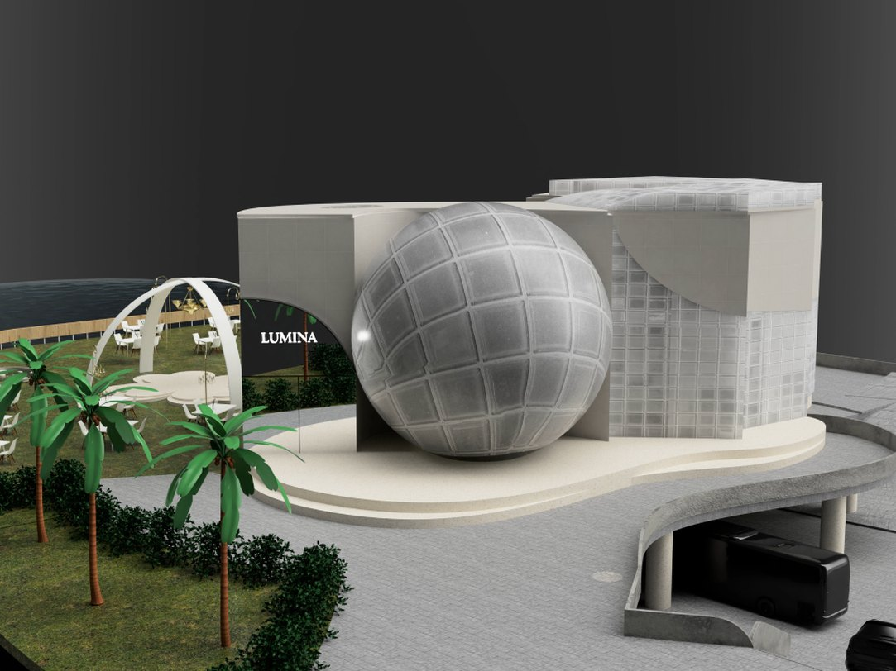
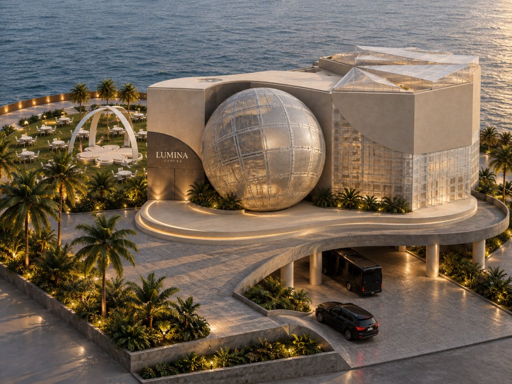
The convention centre is inspired by the moon and its phases, with fluid curves, lighting and ambience reflecting its ever-changing nature.
Designed to transform like crescents and full moons, the space adapts to different event scales and moods. The layout is inclusive and versatile, accommodating conferences, meetings, weddings and social gatherings. An outdoor hall, indoor hall, dedicated dining and exhibition areas are all connected by a central lobby, and each zone can change in form and atmosphere to suit the event.
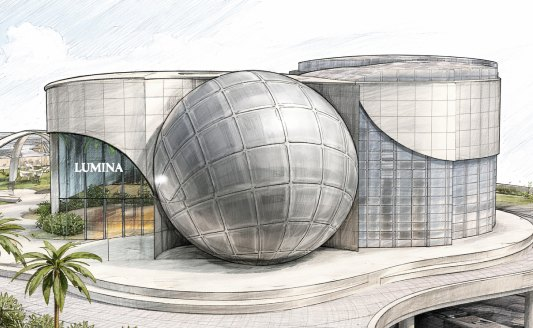
Concept sketch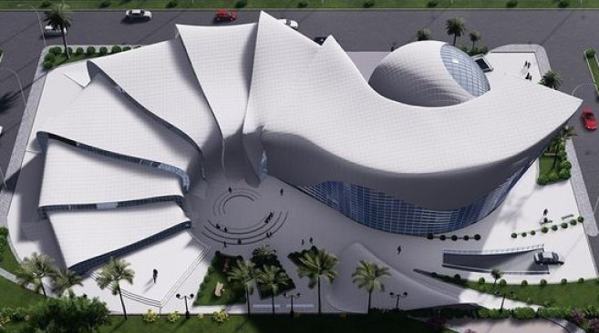
Form referenceThe plan fans out in a spiral from the entrance. Guests arrive into the lobby and dining drum, then move round the curve to the stages and main hall, with the outdoor terrace and gardens running down to the river.
Arrival, information and help desk; the hinge that links every zone
Circular café and restaurant beside the lobby
Performances under the fanned roof segments
Arched stage opening onto the main hall
Event and exhibition space on the riverfront
Seating area and landscaped walking paths with greenery
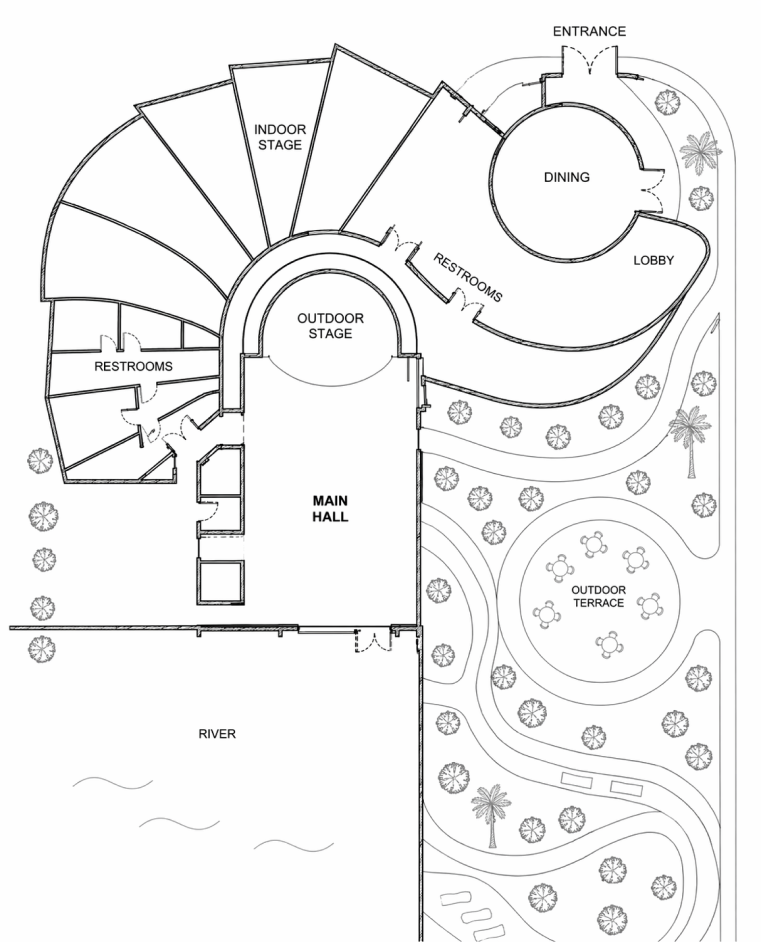
Plan · Ground floorDrag across the frame to compare the Fusion 360 model with the final render from the same camera.
The perforated sphere sits between two curved shell walls like a full moon caught in a crescent. A raised, softly lit plinth carries the building over the drop-off, so cars and coaches pull in beneath the curve.
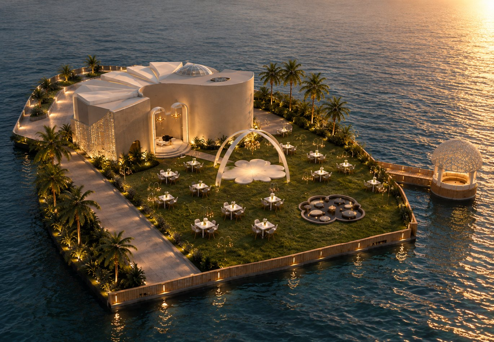
CAM_04 · Aerial · Waterfront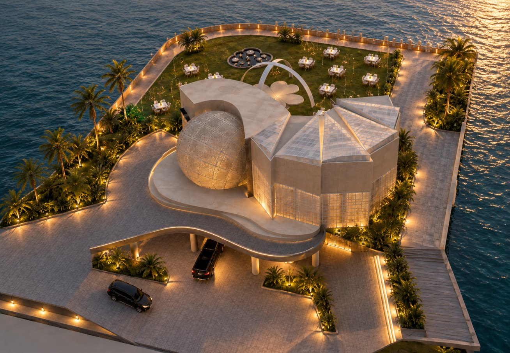
CAM_03 · Aerial · Roof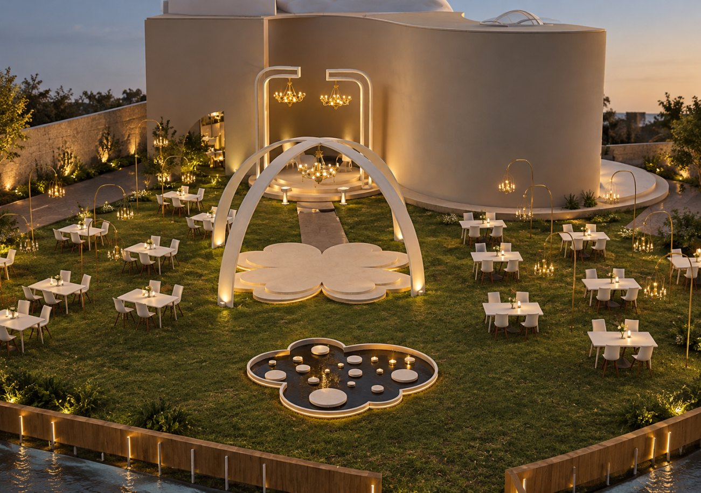
CAM_05 · Outdoor terrace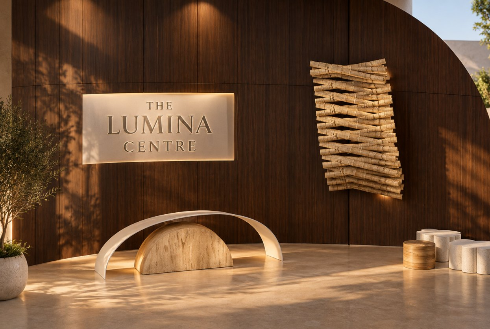
CAM_06 · LobbyA curved walnut wall wraps the arrival space. The reception desk repeats the crescent: a travertine half-disc under a thin white arc. A backlit sign and a woven bamboo sculpture catch the low sun.
Walnut veneer · Travertine · Backlit acrylic · Bamboo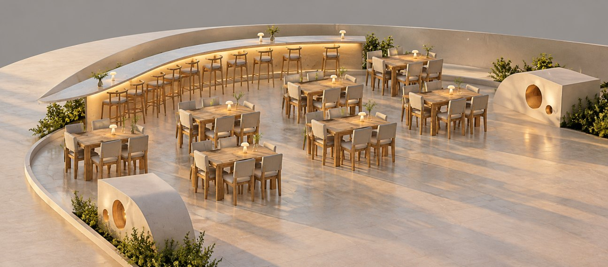
CAM_07 · DiningThe bar follows the curve of the dining drum, with a cove-lit counter and timber stools. Sculpted planters with round cut-outs echo the moon at the edges of the room.
Oak · Upholstered fabric · Stone floor · Cove LED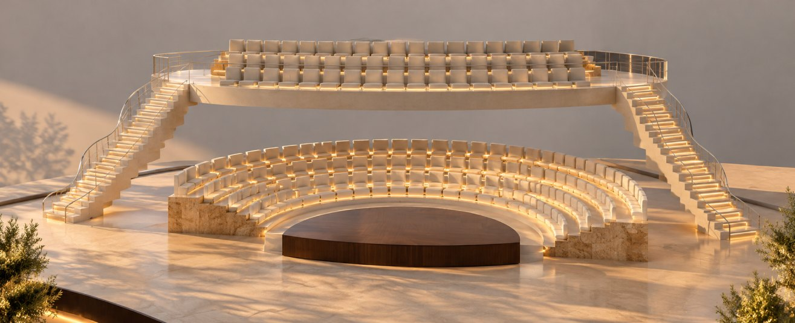
CAM_09 · AuditoriumCurved tiers of seating face a half-moon walnut stage. A balcony row spans above, reached by two staircases with glass balustrades and lit treads.
Walnut · Travertine · Upholstery · Glass · Step lightsA pale, moonlit palette outside and warm natural materials inside. Silver and glass catch light at night; stone and timber hold warmth at ground level.
Warm white throughout, kept low and indirect so the building glows rather than shines. Light comes from edges, inside the sphere and from the terrace lamps.
Sphere, shell walls and glass wing blocked out on the plinth, with the drop-off ramp below.
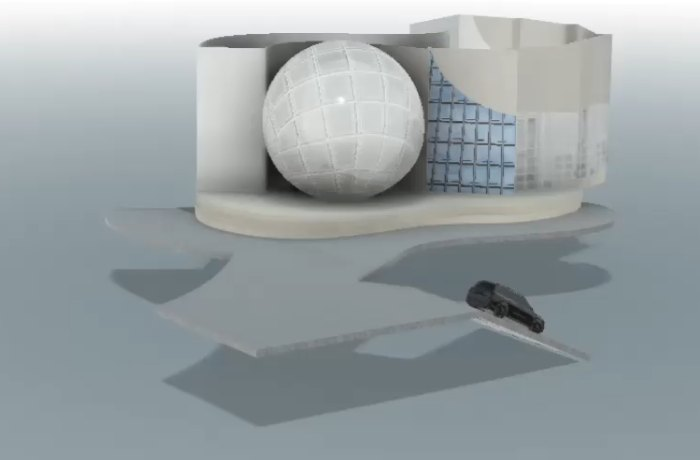
Block-outPanelled sphere, glass block wing, palms and the curved drop-off modelled and lit in the first render pass.
The outdoor stage, arches, sunken lounge, arc lamps and table layout set out on the riverfront lawn.
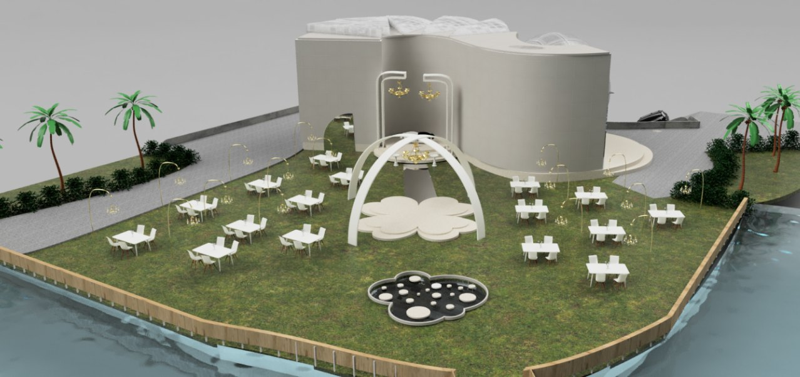
Model render · Terrace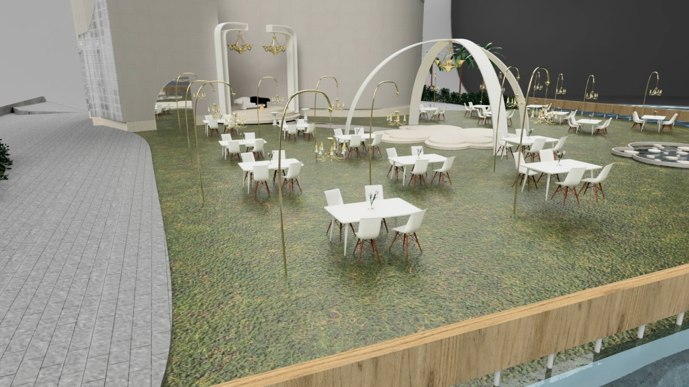
Model render · PromenadeTiered seating, balcony, staircases and the walnut stage modelled before materials and lighting were finalised.
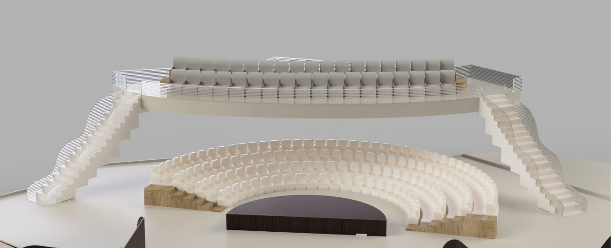
Model render · Auditorium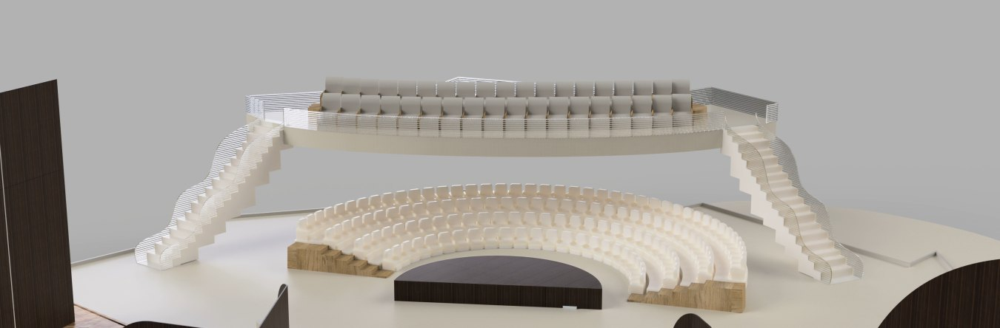
Model render · Wide